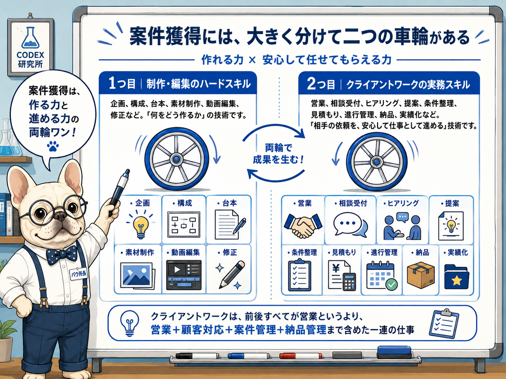
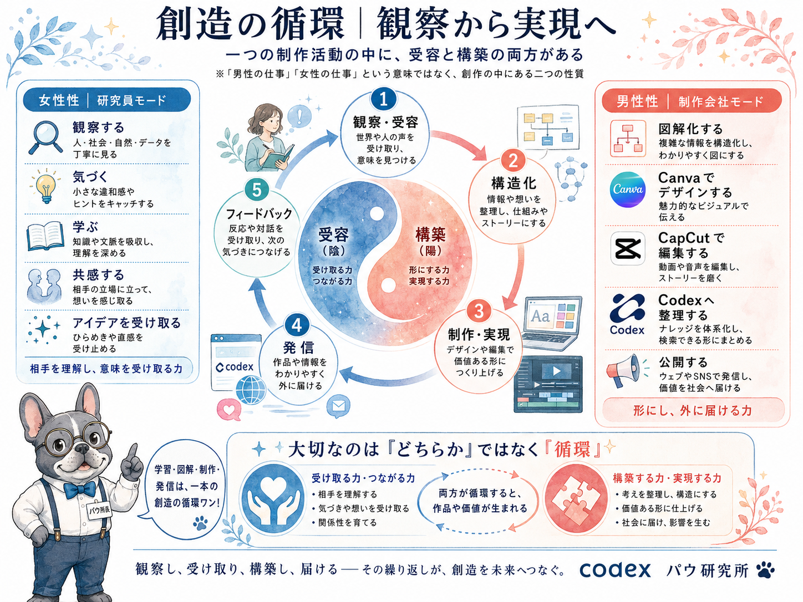

見えていた範囲と、見えていなかった範囲
私は仕事全体の流れを何も理解していなかったわけではなく、その中の「制作する工程」だけを、先に学んでいたのだと思います。
企画、構成、台本、素材制作、編集という制作エリアは、ようやく少しずつ見えてきました。
一方で、その前にある依頼受付、ヒアリング、条件整理と、その後にある納品、実績化については、まだ流れを知らないままでした。
Learning OS｜2026.07.14
案件獲得に向けて何を意識すればよいのかを考えたことから、制作スキルとクライアントワークの両輪、そして学習・制作・発信をつなぐ創造の循環まで見えてきた日の記録です。
Codexへ戻るBeginning
映像制作や動画編集を学びながら、今後の案件獲得に向けて並行して意識した方がよいことはあるのか。具体的に何から始めればよいのか。そんな疑問から、仕事につなげるための準備について考え始めました。
すると、提供サービスの整理、制作事例、相談受付、ヒアリング、条件整理、見積もり、進行管理、納品、実績化といった、大きな業務フローが一度に現れました。
Fog
案件につなげる準備のたたき台が整っていくほど、「これはもう仕事なのだ」と感じました。私はこれまで専門職として働いた経験はありますが、会社の中で行う一般的なオフィスワークや、案件を組織的に進める業務フローにはなじみがありませんでした。長く専業主婦として生活してきたこともあり、今回初めて目にする仕事の流れは、想像以上に大きく感じられました。
未経験だから分からないだけなのか。専門職とは異なる会社の業務フローに触れてこなかったから、仕事の進め方を理解しにくいのか。やはり私には難しいのではないか。そんな印象が一度に押し寄せ、何から手をつければよいのか分からなくなりました。
Current Position
ChatGPTと対話しながら整理していくうちに、少しずつ現在地が見えてきました。
私は仕事全体の流れを何も理解していなかったわけではなく、その中の「制作する工程」だけを、先に学んでいたのだと思います。
企画、構成、台本、素材制作、編集という制作エリアは、ようやく少しずつ見えてきました。
一方で、その前にある依頼受付、ヒアリング、条件整理と、その後にある納品、実績化については、まだ流れを知らないままでした。
制作工程の中で迷っていたというより、制作工程の外側にある仕事の流れを、まだ知らなかったのです。
Two Wheels
今回整理できた全体像は、制作・編集のハードスキルと、クライアントワークの実務スキルという二つの軸でした。
企画、構成、台本、素材制作、動画編集、確認、修正など。「何をどう作るか」の技術。
営業、相談受付、ヒアリング、提案、条件整理、見積もり、進行管理、納品、実績化など。「相手の依頼を、安心して仕事として進める」技術。
クライアントワークは、前後すべてが営業というより、営業、顧客対応、案件管理、納品管理まで含めた一連の仕事です。
Related Visual
制作・編集のハードスキルと、クライアントワークの実務スキルを、案件獲得に必要な二つの車輪として整理しました。

From Work to Creation
二つの車輪を眺めていると、もう一つのつながりが見えてきました。制作とクライアントワークは完全に別々のものではなく、どちらの中にも「受け取る力」と「形にする力」が含まれています。
相手の話を聞き、意味を受け取り、整理し、構造化し、制作し、外へ届ける。そして、反応や対話を受け取り、次の気づきへつなげていく。
感じる、観察する、相手を理解する、共感する、アイデアを受け取る。
整理する、構造化する、制作する、納品する、公開する。
どちらか一方ではなく、両方が行き来することで作品や価値が生まれます。本当は、それぞれの車輪の中にも陰陽のような二つの性質があり、互いに循環しているのだと感じました。
Creative Cycle
観察・受容から構造化、制作・実現、発信、フィードバックへと続く流れを、創造の循環として整理した図です。

Closing
今回、案件獲得に必要な全体像を整理したことから、制作・編集のハードスキルと、クライアントワークの実務スキルという二つの軸が見えてきました。
さらに考えていくと、この二つは完全に別々のものではなく、どちらの中にも「受け取る力」と「形にする力」が含まれていることに気づきました。
相手の話を聞き、意味を受け取り、整理し、構造化し、制作し、外へ届ける。そして、反応や対話を受け取り、次の気づきへつなげていく。
今日の学びは、案件獲得の業務フローを知ることから始まりましたが、最後には、学習・制作・発信が一つの創造の循環としてつながって見えるところまで進みました。
そして、この循環は、これまで「AI時代の学び方」で大切にしてきた「学ぶ、作る、つながる」というテーマとも重なっていました。学ぶことで受け取り、作ることで形にし、発信や対話を通じて人や次の気づきにつながる。その往復そのものが、私が続けてきた学びの形だったのだと思います。
私は動画編集だけを学んでいたのではなく、「学ぶ、作る、つながる」を往復しながら、観察から実現へ向かう創造の流れそのものを、少しずつ理解し始めているのかもしれません。
Public Scope
このログでは、案件獲得について考えたことで見えてきた全体像と、自分の学びが創造の循環へつながった過程を残しています。実際の案件準備で使用する手順、確認項目、進行表などは、公開用Codexとは分けて管理します。